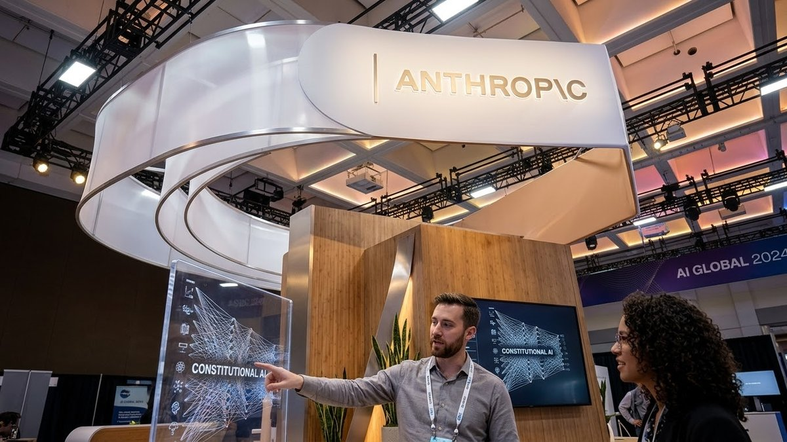

Analyse
Anthropic-Börsengang sechsfach überzeichnet: Was hinter dem Hype steckt und wie Privatanleger mitmachen können
Der Claude-Entwickler will bis zu 64 Mrd. Dollar einsammeln, die Nachfrage übersteigt das Angebot um ein Vielfaches. Wir ordnen ein: Wachstum, Verluste, Bewertung, Zeitplan und die Zeichnung bei Trade Republic und Scalable Capital.

Kurz gesagt
Der Börsengang: Anthropic will bis zu 64,4 Mrd. Dollar einsammeln, die Bücher sollen rund sechsfach überzeichnet sein. Am Mittwoch steht der Preis fest, am Donnerstag beginnt der Handel an der Nasdaq.
Das Geschäft: Der Umsatz hat sich binnen eines Jahres verzwölffacht, das Wachstum lässt aber nach, und im dritten Quartal stand wieder ein operativer Verlust.
Mitmachen: Zeichnen lässt sich bei Trade Republic und Scalable Capital bis Mittwoch. Eine Zuteilung ist nicht sicher.
Dario Amodei verkauft seinen Börsengang mit Understatement. „Lass dein Unternehmen nie auch nur einen Dollar mehr wert sein, als es wirklich wert ist“, diesen Rat habe er sich zu eigen gemacht, sagte der Anthropic-Chef am Freitag bei einem live übertragenen Auftritt mit JP-Morgan-Chef Jamie Dimon in New York. Verlässliche Prognosen könne er ohnehin nicht geben: 2024 und 2025 habe sich der Umsatz jeweils etwa verzehnfacht, „und jedes Jahr sagen wir: Wir wissen nicht, was nächstes Jahr passiert“.
Die Anleger stört das offenbar wenig. Gut eine Woche vor dem geplanten Handelsstart haben die Banken rund sechsmal so viele Kaufaufträge gesammelt, wie Aktien zu haben sind. Die Banken erwägen nach Berichten der Financial Times sogar, den Preis über die Spanne von 70 bis 78 Dollar zu heben. Die Bewertung läge dann bei 1,5 Billionen Dollar oder mehr. Es wäre einer der größten Börsengänge der Geschichte, und das ausgerechnet in einer Woche, in der Anleger an der KI-Branche zweifeln wie lange nicht.
Die Eckdaten
Anthropic bietet 801,4 Millionen neue Aktien an, bestehende Aktionäre verkaufen weitere 23,6 Millionen, darunter die sieben Mitgründer mit jeweils 3,4 Millionen Stück. Am oberen Ende der Spanne bringt das bis zu 64,4 Mrd. Dollar. Parallel zeichnen AMD, Broadcom, Google, Micron, Microsoft, Nvidia und TSMC in einer Privatplatzierung für 26 Mrd. Dollar, Nvidia allein für rund 10 Mrd. Dollar. Mit der Mehrzuteilungsoption käme das Gesamtvolumen auf rund 100 Mrd. Dollar. Der Börsengang von SpaceX im Juni hatte 75 Mrd. Dollar eingebracht.
| Kürzel | ANT (Nasdaq) |
| Preisspanne | 70 bis 78 Dollar |
| Preisfestsetzung | Mittwoch, 18. November |
| Erster Handelstag | Donnerstag, 19. November |
| Bewertung (frei handelbare Aktien) | gut 1 Billion Dollar |
| Bewertung (voll verwässert) | rund 1,4 Billionen Dollar |
| Letzte Finanzierungsrunde | 965 Mrd. Dollar |
| Konsortialführer | Goldman Sachs, Morgan Stanley, dazu 20 weitere Banken |
Die beiden Bewertungen unterscheiden sich, weil die voll verwässerte Rechnung auch Aktienoptionen der Mitarbeiter und gesperrte Pakete einschließt. Bei der Zuteilung sollen bestehende Geldgeber Vorrang bekommen, einige Interessenten erhielten deshalb weniger Aktien als erhofft.
Das Geschäft: rasantes Wachstum, aber das Tempo sinkt
Im dritten Quartal setzte Anthropic 17 Mrd. Dollar um, zwölfmal so viel wie ein Jahr zuvor. Die aufs Jahr hochgerechnete Umsatzrate lag Ende Oktober bei 81 Mrd. Dollar, Ende September waren es 71 Mrd., Ende Juli 65 Mrd. Dollar. Mehr als 11.900 Kunden zahlen inzwischen mindestens 100.000 Dollar im Jahr, im März 2025 waren es rund 400. Dimon lieferte bei dem Auftritt gleich ein Beispiel: 250.000 Beschäftigte von JP Morgan nutzten Claude mehrmals pro Woche, die Bank zähle zu den größten Kunden.
Die Kurve flacht allerdings ab. Zum Vorquartal wuchs der Umsatz um 47 %, im Quartal davor waren es noch 144 %. Der Prospekt selbst stellt sinkende Wachstumsraten in Aussicht. Amodei sieht die nächsten Märkte in Wissenschaft, Biologie, Robotik und Cybersicherheit, die er für „viel größer“ hält als das Programmieren, mit dem Anthropic zuletzt am meisten verdient hat.
Die Kosten: Rechenleistung als Dilemma
Die größte Unbekannte ist die Rechenleistung. Amodei nennt sie „das tiefste unternehmerische Dilemma“ der Firma: Sie muss ein bis zwei Jahre im Voraus eingekauft werden, ohne dass jemand das Wachstum kennt. Anthropic kaufe deshalb bewusst knapp ein und decke Spitzen am teureren Spotmarkt, wie eine Versicherungspolice. Wie teuer das werden kann, zeigt das dritte Quartal. Nach dem ersten operativen Gewinn im zweiten Quartal stand ein Verlust von 567 Mio. Dollar, ausgelöst durch 5 Mrd. Dollar Zusatzkosten für kurzfristig zugekaufte Rechenleistung. Dazu kommen vertragliche Verpflichtungen von rund 900 Mrd. Dollar, fast ausschließlich für Rechenleistung und Infrastruktur.
Eine Bruttomarge weist der Prospekt nicht aus, die Rechenkosten stecken in einer Sammelposition. Amodei nennt seine Margen „ziemlich gut“. Prüfen können Anleger das bisher nicht.
Das Umfeld: Zweifel an der KI-Branche
Der Börsengang fällt in eine nervöse Zeit. Tech-Aktien hatten nach den Zwischenwahlen in den USA zeitweise zweistellig verloren. Die Demokraten hatten die Wahl klar gewonnen und im Wahlkampf eine strengere Gangart gegenüber der Branche versprochen, zugleich wächst der Widerstand gegen neue Rechenzentren. Bei Nvidia musste Gründer Jensen Huang nach zwei Affären zurücktreten. Die Nachfrage nach Anthropic-Aktien zeigt, dass Investoren trotzdem bereit sind, für Wachstum zu zahlen.
Dazu gehört eine Besonderheit, die über die Anleger hinausgeht. Fünf Prozent des Unternehmens fließen in einen Wohltätigkeitsfonds, der nach Amodeis Worten der Konzentration von Reichtum durch KI entgegenwirken soll. Bei einer Bewertung von einer Billion Dollar wären das 50 Mrd. Dollar. Die Gründer haben zudem versprochen, 80 % ihres Vermögens zu spenden.
Was Anleger erwarten können
Kurzfristig dürfte vor allem die Mechanik des Marktes den Kurs bestimmen. Analysten rechnen mit starken Schwankungen, bis die Haltefristen der Altaktionäre auslaufen und sich die Nachfrage der Indexfonds eingependelt hat. Seit einer Regeländerung im Mai kann eine so große Firma schon nach 15 Handelstagen in den Nasdaq 100 aufgenommen werden, Indexfonds müssen dann kaufen. Die Haltefrist für die meisten Insider endet nach den Zahlen zum ersten Quartal 2027, spätestens nach 180 Tagen, für die Mitgründer und einige Großaktionäre gilt sie bis zu ein Jahr.
Für Privatanleger sind laut Prospekt bis zu 20 % der Aktien vorgesehen. Bei einer sechsfachen Überzeichnung heißt das trotzdem: Wer zeichnet, wird mit großer Wahrscheinlichkeit gekürzt, oft gibt es nur Bruchteile einer Aktie.
So können Privatanleger zeichnen
In Deutschland bieten bisher Trade Republic und Scalable Capital die Zeichnung an.
| Broker | Frist | Hinweise |
|---|---|---|
| Trade Republic | Mi., 18.11., 16 Uhr | Zeichnung in der App, man gibt einen Betrag an; Zahl der Aktien und Preis stehen erst bei der Zuteilung fest |
| Scalable Capital | Mi., 18.11., 12 Uhr | ab 110 Euro, keine Sperrfrist für Zeichner |
Wer nicht zeichnet oder leer ausgeht, kann die Aktie ab Donnerstag über die Börse kaufen, allerdings zum dann gültigen Kurs. Bei großen Börsengängen liegt der erste Kurs oft deutlich über dem Ausgabepreis und schwankt in den ersten Tagen stark.
Werbung · Empfehlungslinks
Noch ohne Depot? Über diese Links bekommst du einen Bonus, ich erhalte eine Prämie, für dich ändert sich nichts: Trade Republic (Willkommensbonus für Neukunden), Scalable Capital (25 € Startbonus und die Chance auf einen Extra-Bonus fürs Altersvorsorgedepot) und Smartbroker+ (Freunde werben).
Kann ich die Anthropic-Aktie schon kaufen?
Börsennotiert ist die Aktie noch nicht, die ISIN steht aber fest: US03703U1079 (WKN A42SXH). Zeichnen kannst du nur über die Banken und Broker, die Anthropic für das Angebot ausgewählt hat, eine Zuteilung ist nicht garantiert. Bei Trade Republic und Scalable Capital läuft die Zeichnung, bei Smartbroker+ kannst du deine Order schon vor dem Handelsstart ins Orderbuch geben. Indirekt sind Anleger über Konzerne wie Amazon und Alphabet beteiligt, die Anteile an Anthropic halten und in vielen Welt- und Technologie-ETFs enthalten sind. Das ist eine Einordnung und keine Empfehlung. (Stand: 13.11.2026)
Einordnung
Für den Börsengang sprechen das Wachstum, die Kundenbasis aus großen Unternehmen und die starken Partner, die selbst Milliarden investieren. Dagegen sprechen die Verluste, die enormen Verpflichtungen für Rechenleistung, ein nachlassendes Wachstumstempo und eine Bewertung, die schon sehr viel Erfolg vorwegnimmt. Amodeis Leitmotiv, das auch im Prospekt steht, lautet: lieber zu wenig versprechen und mehr liefern. Ob die Anleger das glauben, zeigt sich am Mittwoch beim Preis und am Donnerstag beim ersten Kurs.
Keine Anlageberatung.
Quellen
- Handelsblatt, „Banken wollen wohl IPO-Bewertung auf 1,5 Billionen Dollar erhöhen“ (11.11.2026)
- Handelsblatt, „Anthropic-Börsengang offenbar schon sechsfach überzeichnet“ (13.11.2026)
- Handelsblatt, „Dario Amodei spricht über Chancen, Profit und KI-Sicherheit“ (13.11.2026)
- Bloomberg, „Anthropic’s IPO Is Said to Be About Six Times Oversubscribed“ (12.11.2026)
- Financial Times über Handelsblatt, Banken erwägen höhere Bewertung (11.11.2026)
- Anthropic, Börsenprospekt S-1/A
- Börse Online, „Mega-IPO von Anthropic: Jetzt bei Trade Republic und Scalable Capital zeichnen“ (13.11.2026)
- Die Spekulanten, Anthropic bei Scalable Capital zeichnen: Lock-up und Termine (11.11.2026)
Hinweis: Dieser Text dient der allgemeinen Information und ist weder Anlage-, Steuer- noch Rechtsberatung. Kapitalanlagen sind mit Risiken verbunden, bis hin zum Totalverlust.